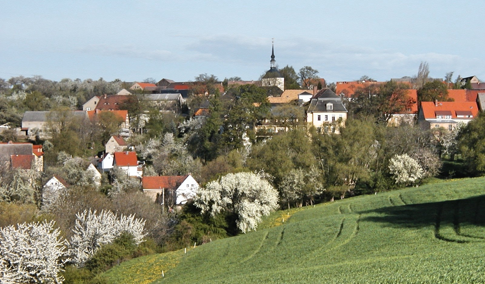

Über den Verlag

Der Verlag Niggemann & Simon wurde am 6. Mai 2002 in Maxen gegründet, einem Dorf, in dem Weltgeschichte geschrieben wurde. Das kleine Unternehmen widmet sich insbesondere der Geschichte und Kultur Maxens und seiner Umgebung. Sein Hauptanliegen ist es, historische Quellen, Forschungsergebnisse und Zeugnisse regionaler Geschichte einer interessierten Öffentlichkeit zugänglich zu machen.
Einen Schwerpunkt bildet die Schriftenreihe „Rund um den Finckenfang“, in der Beiträge zur Orts- und Regionalgeschichte, zur Kunst- und Kulturgeschichte sowie zu historischen Persönlichkeiten und Ereignissen erscheinen. Neben wissenschaftlich fundierten Darstellungen finden auch Erinnerungen, literarische Texte und bislang wenig bekannte Quellen Berücksichtigung.
Mit seinen Veröffentlichungen möchte der Verlag dazu beitragen, das historische und kulturelle Erbe der Region zu bewahren, das Interesse an der Geschichte Maxens und seiner Umgebung lebendig zu halten und neue Erkenntnisse zu vermitteln.
Darüber hinaus erscheinen gelegentlich Publikationen zu ganz anderen Themen, beispielsweise zur japanischen Kunst, kunstvoll gestaltete Gedichtbände oder ein ausschließlich Forellenrezepten gewidmetes Kochbuch – das einzige seiner Art auf dem deutschen Buchmarkt.
Die Verlegerin, Dr. Gisela Niggemann-Simon, war vor ihrer Selbstständigkeit für den Droste-Verlag und den Wilhelm Knapp Verlag in Düsseldorf sowie für den Evangelischen Presseverband Nord e. V. einschließlich der Lutherischen Verlagsgesellschaft in Kiel tätig.
Wenn sie nicht gerade eine neue Publikation vorbereitet, recherchiert und schreibt sie als freie Journalistin für verschiedene Medien oder begleitet als zertifizierte Gästeführerin Besucher durch die Landeshauptstadt Dresden, ihre einzigartigen Museen und die reizvolle Umgebung.